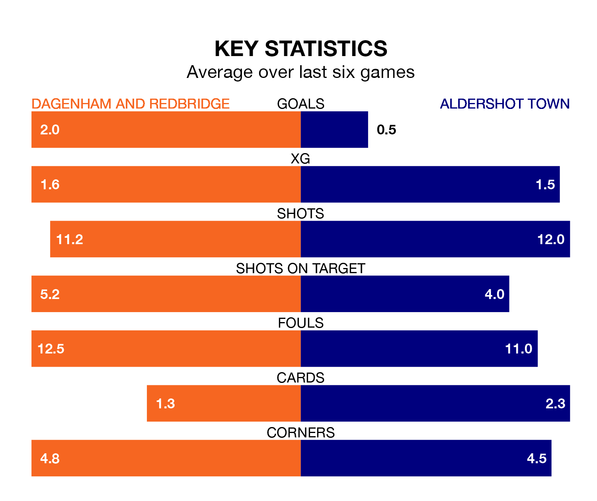

Aldershot Town travel to Dagenham and Redbridge on Saturday lunchtime in the National League.
The visitors come into the game on the back of a win in their last match, having beaten Gateshead 1-0 away, with a goal from Kwame Thomas.
Dagenham & Redbridge, meanwhile, drew their last match, 1-1 against Hartlepool United, with their goal scored by Dion Pereira.
In the last 10 years, Dagenham & Redbridge and Aldershot have played each other on 15 occasions. Dagenham & Redbridge won seven of them, Aldershot six, and they drew twice.
On average, Dagenham & Redbridge scored 1.5 goals and the Shots 1.2 in those matches.
Their last meeting was on September 30, when Aldershot won 3-2 at home.
With 71 goals in 45 games so far this season, Aldershot are scoring more than average in the league with 1.6 goals per game. But they are conceding more than average too, letting in 80 goals at a rate of 1.8 per game.
Dagenham & Redbridge, meanwhile, are average scorers, with 1.5 goals per game. They have conceded 1.3 goals per game.
The hosts are in mixed form in the National League, with two wins and three draws from their last six games.
With a win and two draws over that period, Town's form is worse – they have taken five points from 18, compared to Dagenham & Redbridge's nine.
The Shots are eighth in the table after 45 games, of which they have won 20 and drawn eight, earning 68 points.
Dagenham & Redbridge are seven places behind the away side in 15th, with 14 wins and 13 draws putting them on 55 points.
Updated: 15:40 (UTC), 18/04/24